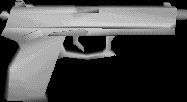

The shooting range
The weapons
The knife  |
Primary fire: Slicing Secondary fire: Throwing The knife is a deadly weapon indeed but very inaccurate and has an extremely slow rate of fire. If you are going to slice and dice your enemies then aim for anywhere above or around the neck, if you are going to throw the knive them aim any where above the waist. Not a very sensible weapon for open maps but usefull in the more close quatered ones. |
| M26 Fragmentation Grenade | Primary fire: Short throw, Medium throw, Long throw The grenade has stirred much contraversy through the AQ2 community, especially in the teamplay area. Many say it's to powerfull others say that it takes no skill and is for nebies. But still it is a weapon in AQ2 and is used. It has 3 different throw lengths. When it goes off pray you aint around as it goes off with a very big BOOM! Important: if you here the sound of a grenade anywhere just crouch as crouching reduces the damage almost by half. If you are crouching and a grenade goes off near you chances are you sill survive (if you bandage quick enough). Don't run away and try to get away from the blast zone just crouch. A single grenade can take out many enemies but can still hurt you! Alot! So always make sure that you get out of the way before it goes off otherwise you are going to get boomed. You can carry 2 of these at anyone time. To get these in TP the server must have them on, and you must be using a bandolier. You can only carry one in TP. |
| Heckler & Koch MK23 | Primary fire: Automatic Secondary fire: Semi-automatic (accuracy is improved) The pistol is a deadly weapon in close combat but lacks the power to do much damage from a distance. Find one lying around a dead body and you will have two, which is called akimbo pistols. The pistol is fairly accurate but suffers from a distance. This is one of the defult weapons and you will always have one on you. |
| Heckler & Koch MP5 | Primary fire: Automatic Secondary fire: 3 round burst mode (accuracy improved) The MP5/10 is another weapon that has kicked up some contraversy, people say it is another weapon for newbies, that it requires no skill u just point and shoot, others say the spread (distance the bullets spray from each other) isn't big enough. But no matter what it's in the game and people are still going to use it. The MP5/10 is not the most powerfull weapon around but packs a punch at close range. Hit someone in the head with this and they are goin to die. Don't try running whist shooting as you will find you have an empty clip and the enemy hasn't got a scratch on him. Your best chance for a hit is to crouch and shoot as crouching improves your accuracy alot. Comes in clips of 30, you can carry a maximum of 2 extra clips. |
| Heckler & Koch Beneli Super 90 M3 | Primary fire: A rather big blast This is a very powerful weapon indeed, but the draw back is that it's range is pathetic. One clean blast to someone within 10 metres will take them out no questions asked. This will give you a nasty scratch even if it only grazes you. It also has a huge knock back which makes it perfect for blasting people off roofs and out of windows. It can hold 7 shells in it, and you can carry 14 extra. Watch your ammo though as you can run out of ammo very quickly with this gun. |
| Colt Model 727 (M4) | Primary fire: Automatic Secondary fire: 3 round burst mode (improves accuracy) This is by far the most powerfull automatic weapon in AQ2. The most noticable thing about this gun is because it is such a powerful weapon it has a lot of kick, so when you fire the barrel of the gun rises in the air. This can be hard to control at times but u get the hang of it. Once again this weapon has poor accuracy whilst moving but when still or crouching it is accurate and deadly. It also has special bullets meaning that they go through you enemies body which can be great if there are multiple enemies behind each other. Just remember to crouch and keep it steady, don't go waving it around like a mad man as you won't hit much if anything. Just try to keep it on your target and you will get the frags. This weapon is however not best suited for long range shooting unless you have it on 3 round burst mode with a laser site and you are crouching. Due to the kick back it can be hard to hit people from a distance |
| SIG Sauer SSG 3000 | Primary fire: Shooting from the hip (inacurate) Secondary fire: 2x,4x,6x zooms, improving accuracy drastically This one of the funnest weapons to use (if you are good at it), with it's powerful scope you can pick off enemies from long range without them even knowing of your presence. Although this gun is horribly inacurate when not zoomed in, it is deadly once zoomed. The gun holds 6 bullets each one needing to be reloaded individually thus decreasing the rate of fire, which means this gun is not suited for close range combat. Find yourself a protected spot and start splitting heads open. When you fire the gun you automattically cock the bullet so it's ready to fire, but when your six run out you must place another 6 in the gun. Press reload multiple times to keep placing bullets in. You can hold a maximum of 20 rounds plus 6 in the gun. |
| 12 Guage Handcannon | Primary fire: BOOM! The handcannon is exactly that. A hand held cannon. This small (4th smallest weapon in the game; second smallest gun) weapon is the most powerful gun bar non. Anyone within 5 metres of this when it goes off will most likely die. Anyone 20 metres away from this won't even need a band aid. The power is huge the range is pathetic. Don't bother using this is big open maps as you will do little damage. But for small enclosed areas, or high rooftop levels thenm this is great. Boom people across map with this super powerfull weapon, chick on a pair of stealth slippers to add a little stealth into your attack. The gun carries two shells when loaded (both fire at once) and you can carry an extra 8 shells. |
Ok that covers the weopons, next we have the items. These are special things that enhance some simple yet effective parts of the game.
If you are wondering how i took screenshots of the weapons by themselves i used a model viewer, you can grab one from here